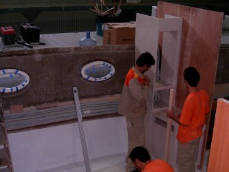
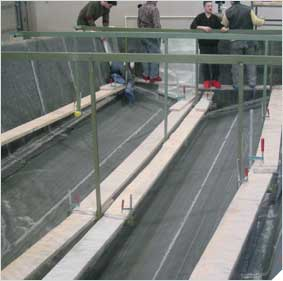

|
Üretim
ve tekne inþasý:
Firma
tekne inþasý aþamasýnda MS Project yanýnda kendi geliþtirdiði
ve sürekli güncellenen bir imalat planlama ve takip (MRP)
yazýlýmý da kullanýlýyor. Bu sayede her iþçiye hergün bir
iþ emri verilerek günün hangi saatinde hangi operasyonlarý
yapacaðý detaylý bir biçim de bildirilmiþ oluyor.
|
 |
|
|
Yat
inþasý sýrasýnda mobilyalarýn yerleþtirilmesi |
Ýç
bölmelerde arasý bal peteði yapýsýnda dolgulu kontraplak
sandviç malzeme kullanýlmaktadýr. |
|
|
|
|
Solda:
Kullanýlan elyaf ve reçineye baðlý olarak vakum altýnda
reçinenin belli zamanda aldýðý yol deneysel olarak ölçülüyor.
Bu sayede imalat aþamasýnda reçinenin hangi aralýklarla
kalýba verileceðine karar veriliyor. |
Teknenin
üst bölgesine ait bir kalýp
|
|
|
|
72'
Fly modeline ait teknenin alt gövde kalýbý |
Bu
kalýbýn içinde çalýþan iþçiler kompozit sandviç yapýnýn
ortasýnda kalacak PVC köpük malzemeyi döþüyor |
DIAB
Infusion Prosesi için hazýrlýk
|
|
|
|
Üretimden
çýkmýþ bir üst parça |
Tekne
gövdesi üzerinde son yüzey iþlemleri yapýlýyor |
Vakum
altýnda reçine (Vinylesther resin) emdirme (vacuum assisted
infusion)
prosesi:
Numarine
bu konuda DIAB Engineering firmasýndan destek almaktadýr: www.diabgroup.com
The
DIAB Infusion Process:
* Vacuum assisted resin transfer
* High glass to resin ratio, resulting superior strength to
weight ratio
* Ultra low VOC for environment
* Clean shopfloor
The
DIAB Infusion Process brings together all the benefits of
sandwich composites such as lightweight and high strength
with the processing, performance and health and safety advantages
of infusion molding.With the DIAB system the specially grooved
core not only enhances the structural performance of the composite
component but also acts as the resin transfer medium. By eliminating
the requirement for sacrificial distribution mats or nets
the cost of consumables is significantly reduced.
|
 |
|
|
|
Karbon
ve aramide (Kevlar) elyafýndan kompozit örgü
|
|
|
|
|
The
DIAB process also allows faster flow rates. This translates
directly into quicker cycle times and the ability to produce
larger components thereby further speeding the production
process. In addition the DIAB system allows the production
of composite components that have high fiber volume fractions
and an excellent surface finish.The system is fully compatible
with polyester, vinylester and epoxy resins and a wide variety
of fibre types and reinforcement forms. It can be readily
introduced using existing molds and without the need for heavy
capital investment.
DIAB
Core Infisuion teknolojisi ve Numarine'de kullanýmýyla
ilgili daha fazla bilgi için:
Daha
fazla bilgi için:
|